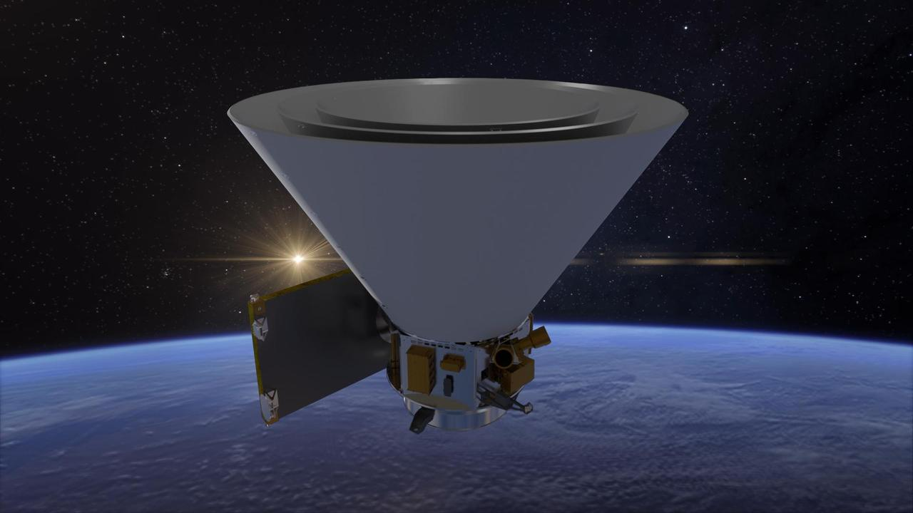

Datos · IRSA · 12 nov 2026
El cielo, en 102 colores.
SPHEREx observa el universo en luz infrarroja para construir un mapa de todo el cielo. Aquí están sus datos, imágenes y avances más importantes.
Conocer la misiónUn proyecto de Gabriela Meza
Grado 8D · IED Bilingüe Nueva Granada

Qué observa SPHEREx
El telescopio registra la luz que nuestros ojos no pueden ver. Sus mediciones ayudan a estudiar galaxias, nubes de polvo y hielo interestelar.
- Bandas infrarrojas
- 102
- Mapeos previstos
- 4
- Rango de observación
- 0,75–5 µm
- Lanzamiento
- 11 mar 2025
Noticias y datos
Publicaciones sobre la misión y sus resultados.
NASA · 8 oct 2026
SPHEREx observa una variedad de enanas marrones
Datos · IRSA · sep 2026
Comienza la tercera entrega rápida de imágenes
Incluye imágenes espectrales de los mapeos 3 y 4.NASA · 17 abr 2026
El observatorio cartografía hielo interestelar en la Vía Láctea
NASA · 18 dic 2025
SPHEREx completa su primer mapa infrarrojo de todo el cielo
Así avanza la misión
- Lanzamiento del observatorio.
- Primer mapa infrarrojo completo.
- Imágenes de los mapeos 3 y 4.
- Primera entrega científica de datos.
